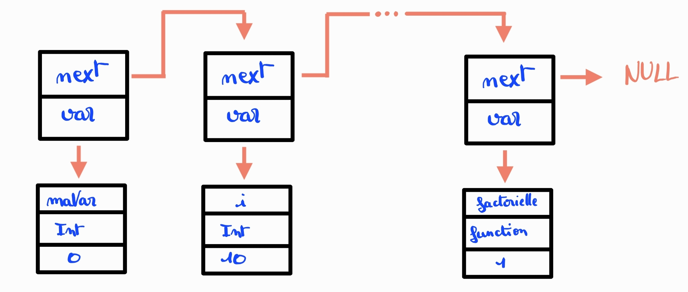
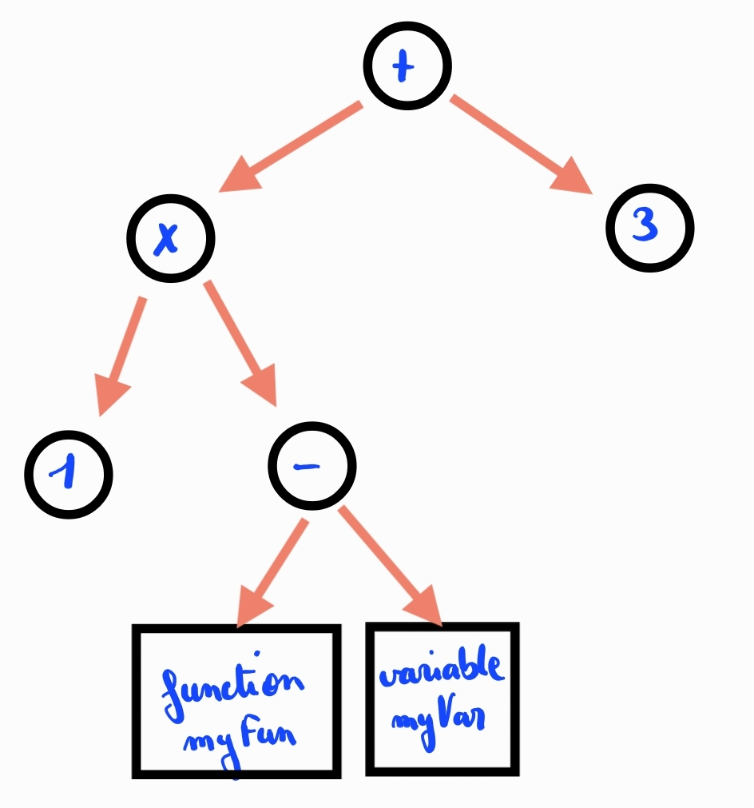

Compilateurs
- Compilateur
- Yacc et Lex
- C
- Structures de données
- Jean-Baptiste Durand
Terminer le compilateur en ajoutant des fonctionnalités complexes (variables, boucles, fonctions)
La lecture de mon premier MON sur le sujet n'est pas nécessaire pour la compréhension de ce MON mais est important pour la compréhension du projet.
Table des matières
- Table des matières
- Évolution du projet
- Nouvelle utilisation de Yacc
- Construction de la liste d'exécution
- Structures de données
- Liens Utiles
Évolution du projet
Le résultat obtenu après le premier MON n'était pas satisfaisant, et avait une utilité limité. C'est pourquoi j'ai décidé de reprendre le projet pour ce MON.
Avant
print(-(7+1)*3);
print(2>=1 && 6!=5+1);
Après
Condition
let i = 5;
if(i == 6) print(i);
if(i>0){
print(1);
}else if(i==0){
print(0);
}else{
print(-1);
}
Loop
let j = 0;
while(j<15){
print(j);
j = j+1;
}
for(let i=0; i<15; i=i+1){
print(i);
}
Function
function add(let var1, let var2 = 1){
return var1 + var2;
}
function factoriel(let nb){
if(nb<=0){
return 1;
}else{
return nb*factoriel(nb-1);
}
}
Nouvelle utilisation de Yacc
Rappel : Yacc est un générateur d’analyseur syntaxique, il va, l'aide de Lex, reconstruire la structure du document, en retrouvant des pattern. Ex : pour comprendre qu'il y a une boucle for, Yacc va repérer le mot clé for, suivit de paramètres : initialisation de variable, condition d'arrêt, incrémentation.
Avec Yacc, on peut exécuter une commande C quand on reconnaît un pattern. Avant, quand le programme reconnaissait la fonction print, il affichait directement la valeur.
Maintenant, le programme stocke dans l'ordre les instructions, qui sont exécutées une fois l'analyse de Yacc faite.
Pourquoi faire ça ?
L'objectif de Yacc, est de reconnaître tous les patterns du code écrit. Pour cela, il passe dans tout le programme une fois et une unique fois.
- Le fait qu'il passe dans tout le programme fait qu'il va executer les 2 cas d'une fonction if
- Le fait qu'il passe une unique fois, fait qu'il est impossible de revenir sur ses pas, ce qu'on voudrait potentiellement, avec une boucle for ou while
Si on enregistre les différentes actions possible, on est alors libre de sauter des actions et/ou de revenir sur nos pas.
Construction de la liste d'exécution
Code exécuté - if
let i = 0;
if(i>=0){
print(i);
}else{
print(0);
}
Liste d'execution
Line 0 - Assignment var : i
Line 1 - If calcul : 1
Line 2 - Goto line : 5
Line 3 - Print calcul : 2
Line 4 - Goto line : 6
Line 5 - Print calcul : 3
Le programme va executer les lignes une par une, sauf si une instruction demande d'aller à une ligne (notamment avec l'instruction Goto). La commande If exécute la ligne suivante si le résultat du calcul est faux, et la deuxième ligne qui suit si le résultat est vrai.
Avec ça il est possible de comprendre les différentes actions effectuées par le programme dans tous les cas.
Code exécuté - for
for(let var = 0; var<15; var = var+1)
{
print(var);
}
Liste d'execution
Line 0 - Assignment var : var
Line 1 - If calcul : 1
Line 2 - Goto line : 6
Line 3 - Print calcul : 2
Line 4 - Assignment var : var
Line 5 - Goto line : 1
Line 6 - Kill var : var
Structures de données
L'utilisation de pointeurs est une nécessité, car les structures des données sont complexes.
Pour pouvoir comprendre l'implémentation de mon compilateur, il faut aussi avoir des notions d'allocation de mémoire (avec malloc), de libération de mémoire (avec free), et de création de structure de données (avec typedef et struct) en C. Mais ces notions ne sont pas nécessaires pour comprendre la suite.
Stockage des variables
Une variable est stockée avec son nom, son type et va valeur.
La structure de données utilisée généralement pour stocker des variables est la table de hachage, qui, si elle est bien construite, permet le sockage, la lecture, la modification et la suppression en O(1).
Cependant, dans mon contexte, ce n'est pas la structure de données la plus adaptée, car voulant utiliser des fonctions, je devais avoir un contexte local pour les variables. C'est à dire, que les fonctions définies dans une fonction, ne sont pas accessible depuis l'extérieur de la fonction. Il faut donc pouvoir supprimer facilement les variables définies dans une fonction, une fois celle-ci terminée, et seulement ces variables.
J'ai donc décidé d'utiliser une structure de liste chaînée, qui a une complexité en stockage en O(1), mais qui a une complexité en lecture, modification et suppression en O(n), avec n le nombre d'éléments stockés.
Illustration d'une liste chaînée

Stockage des calculs
La majorité des opérateurs utilisés pour nos calculs (+, -, *, /, &&, ...), sont des loi de composition interne associés à l'ensemble des nombres. C'est à dire que ces opérateurs s'appliquent sur 2 éléments différents.
Il faut donc créer une structure de donnée qui permet de garder les 2 éléments sur lesquels il faut faire les opérations. Pour cela, on va utiliser un arbre binaire.
Sur les nœuds de l'arbre, il y aura les opérateurs, et sur les feuilles, soit un entier, soit une variable, soit un appel à une fonction.
Illustration de l'arbre de calcul

Cette structure est parfaite si il n'y a pas de fonction, mais n'est pas suffisante si on intègre les fonctions.
Pour les plus curieux, qui veulent savoir comment je gère les fonctions : j'utilise, en plus de l'arbre de calcul, une liste des fonctions présentes, qui pour chaque liste contient une pile de paramètres qui pointent récursivement vers un calcul. Sur chacun de ces éléments, j'ai une gestion du stockage des valeurs intermédiaires (par pile LIFO : Last In First Out), et des algorithmes de gestion de propriété des valeurs de retour assez complexe.
La complexité de cette structure est expliquée par le fait qu'on puisse faire des fonctions récursives et qu'on puisse appeler des fonctions dans les paramètres d'une fonction (ex : print(add(1,add(2,add(3,4))));)
Tableaux dynamiques
En C, il existe des tableaux, pour stocker un certain nombre d'éléments de même type.
Dans ces tableaux, on peut accéder à un élément grâce à son indice. Le seul défaut c'est qu'on doit définir la taille du tableau à l'initialisation de celui-ci, or il est pas toujours possible de savoir à priori combien d'éléments on veut mettre dans le tableau.
Il a fallu reconstruire les listes Pythons, où on peut accéder à un élément mais aussi rajouter un élément à la fin autant de fois qu'on veut.
Pour cela, j'initialise le tableau avec une taille fixée, par exemple 4.
Quand j'ajoute un élément :
- le tableau a encore de la place, donc j'insère l'élément à la première case vide.
- sinon, je crée un tableau 2 fois plus grand, je recopie toutes les valeurs déjà présentes, puis j'insère l'élément à la première place de libre.
La complexité d'accès à un élément est en O(1)
La complexité d'ajout d'un élément est en pire cas en O(n) quand il est nécessaire de recopier le tableau, mais ce cas est suffisament rare pour que l'insertion soit en moyenne en O(1).
J'ai utilisé cette structure de donnée 3 fois dans mon projet. Pour stocker les lignes d'actions, pour stocker l'ensemble des calculs et pour stocker l'ensemble des fonctions d'un calcul.
Liens Utiles
Pointeurs
Table de hachage
Liste chaînée
Arbre binaires
C structures 1
C structures 2